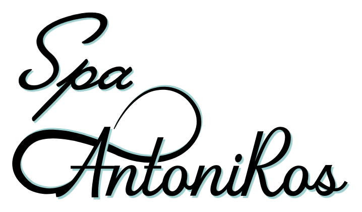

Escuchamos antes de recomendar
Cada cuerpo, cada momento y cada objetivo son diferentes.

Escuchar · Observar · Cuidar
Cada experiencia comienza por comprender lo que necesitas.
Cuidado personal
Cada cuerpo, cada momento y cada objetivo son diferentes.
La atención se construye desde los detalles, no desde una fórmula repetida.
El tratamiento se adapta a ti y a lo que quieres alcanzar.
Nuestra filosofía
Hay formas de cuidado que se explican. Otras simplemente se sienten. Spa AntoniRos nace de una atención capaz de comprender antes de recomendar.
Más solicitados
Selecciona una categoría y reserva directamente por WhatsApp.
Existe un catálogo más amplio de tratamientos que se ajustan a ti, según valoración previa.
Solicitar valoraciónResultados
La experiencia
Recepción, cabinas y detalles preparados para recibirte con calma, limpieza y atención.
Reseñas
Desde que llegué me sentí escuchada. Me explicaron cada paso con calma y el tratamiento se sintió realmente pensado para mí.
Una recomendación para ti
Cuéntanos qué necesitas. Te ayudamos a encontrar el cuidado adecuado después de una valoración previa.
Solicitar valoraciónEncuéntranos